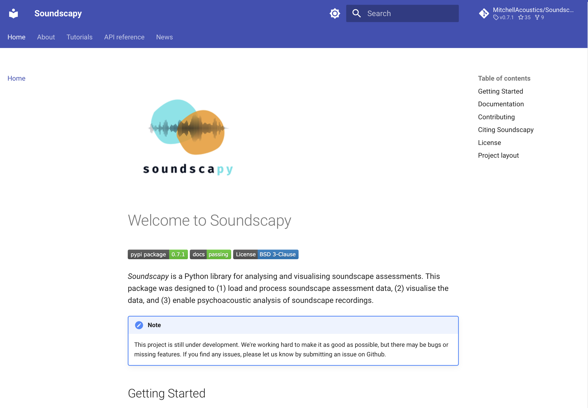
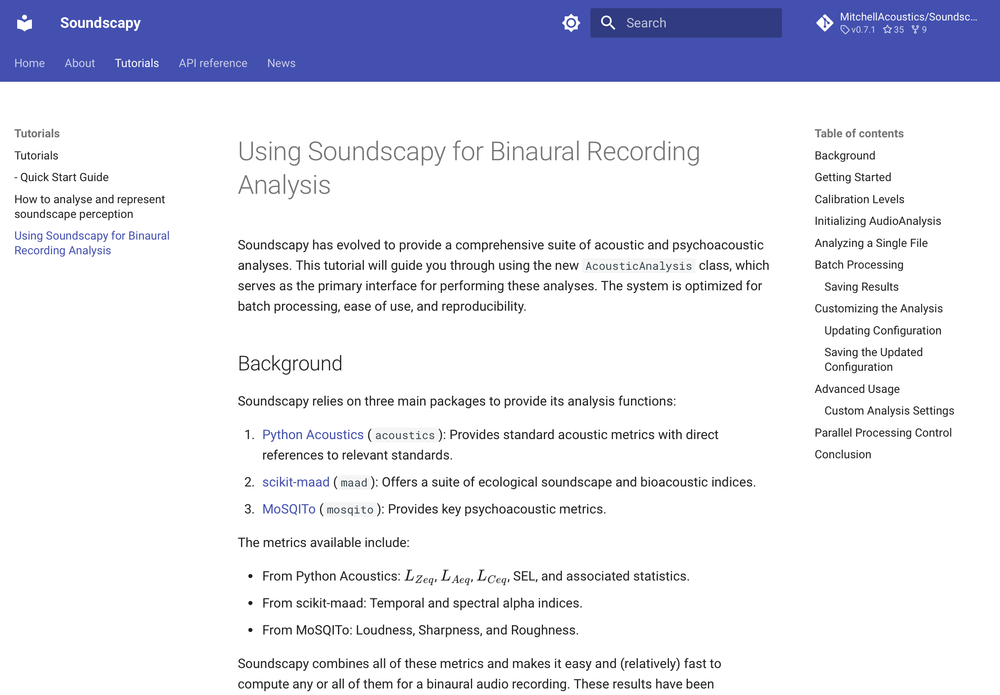

Soundscapy
A Python Package for Soundscape Assessment and Analysis
Andrew Mitchell ![]()
Institute for Environmental Design & Engineering and Bartlett School of Sustainable Construction
University College London
August 26, 2024
Soundscape Circumplex Model
- Proposed by Axelsson, Nilsson, and Berglund (2010)
- Comprises two orthogonal dimensions that capture key aspects of soundscape perception:
- Pleasant-Annoying (x-axis)
- Eventful-Uneventful (y-axis)
- Eight perceptual scales
- Officially adopted in ISO/TS 12913-2, quickly becoming the dominant soundscape perception assessment method1
- Serves as the cornerstone for Soundscapy’s analytical approach and visualisations

ISO Coordinates Calculation
- Transforms 8 PAQ responses into 2D coordinates
- Implements improved equations from ISO 12913-3 upcoming revisions
- Offers flexible input ranges (e.g., 1-5, 0-100) to accommodate various survey designs
- Supports different angle configurations for various survey translations1
\[ P_{ISO} = \frac{1}{\lambda_{Pl}} \sum_{i=1}^{8} \cos{\theta_i} \cdot \sigma_i \qquad(1)\]
\[ E_{ISO} = \frac{1}{\lambda_{Pl}} \sum_{i=1}^{8} \sin{\theta_i} \cdot \sigma_i \qquad(2)\]
| PAQ1 | PAQ2 | PAQ3 | PAQ4 | PAQ5 | PAQ6 | PAQ7 | PAQ8 | ISOPleasant | ISOEventful | |
|---|---|---|---|---|---|---|---|---|---|---|
| 0 | 2.0 | 4.0 | 2.0 | 1.0 | 2.0 | 2.0 | 4.0 | 2.0 | 0.219670 | -0.133883 |
| 1 | 2.0 | 4.0 | 4.0 | 4.0 | 4.0 | 4.0 | 1.0 | 1.0 | -0.426777 | 0.530330 |
| 2 | 5.0 | 3.0 | 3.0 | 1.0 | 2.0 | 1.0 | 3.0 | 4.0 | 0.676777 | -0.073223 |
| 3 | 5.0 | 3.0 | 3.0 | 1.0 | 2.0 | 2.0 | 3.0 | 4.0 | 0.603553 | -0.146447 |
| 4 | 5.0 | 3.0 | 3.0 | 2.0 | 2.0 | 3.0 | 3.0 | 4.0 | 0.457107 | -0.146447 |

Code
import seaborn as sns
sample_transform = sspy.surveys.rename_paqs(sample_transform)
sample_transform = sspy.surveys.add_iso_coords(sample_transform, overwrite=True)
colors = ["b", "r"]
palette = sns.color_palette(colors)
sspy.plotting.scatter_plot(sample_transform, hue="RecordID", palette=palette, diagonal_lines=True, legend="brief", s=100, figsize=(8,8))
Distribution-based Analysis
Developed by Mitchell, Aletta, and Kang (2022)
Represents the collective perception of a soundscape as a distribution, using kernel density estimation
Key Benefits:
- Visualizes central tendency, dispersion, and skewness of perceptions
- Illustrates the shape and extent of soundscape perception in circumplex space
- Allows for statistical comparisons between different soundscapes or groups
Additional features:
- Calculation of percentiles and other statistical measures
- Multiple visualization options (both Seaborn and Plotly backends available)


Package Documentation
- Comprehensive Documentation:
- Installation guide
- Quickstart tutorials
- API reference
- Example notebooks
- GitHub Repository:
- Open-source code
- Issue tracking
- Contribution guidelines
- Regular Updates:
- Version changelog
- Deprecation notices
- New feature announcements


